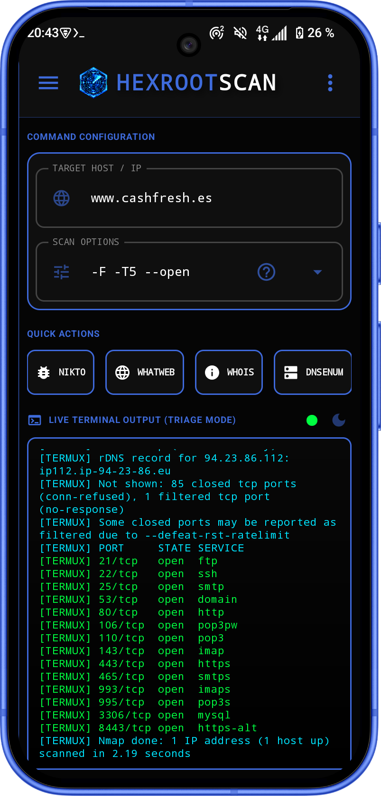

01 // NMAP INTEGRADO
🕵️♂️ Análisis avanzado de red
Realiza escaneos de puertos, detección de servicios activos, identificación de versiones y mapeo completo de hosts en tu red de forma nativa desde el móvil.
Escaneo de puertos
Detección de servicios
Descubrimiento de hosts
Mapeo de red
